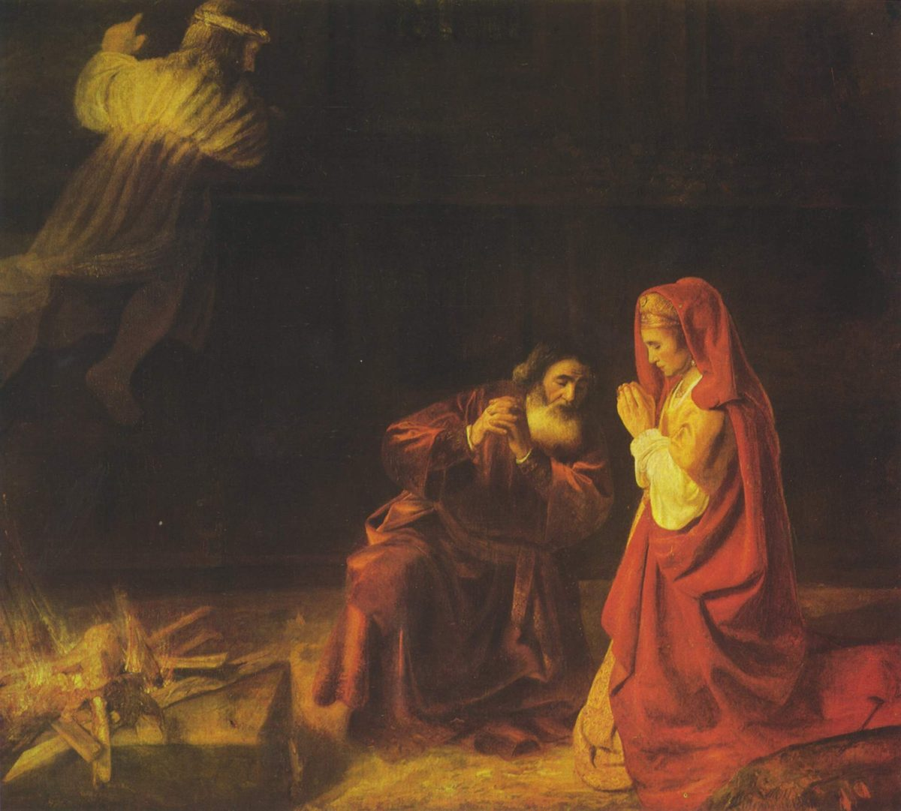

Jueces 13 — La Traducción Mister

Manoa y su mujer se arrodillan en la oscuridad mientras el visitante sale del cuadro por arriba a la izquierda, sobre el fuego de la peña: el versículo 20, «el ángel de Jehová subió en la llama del altar, mientras Manoa y su mujer miraban; y cayeron sobre sus rostros en tierra». El pintor los pone orando en vez de rostro en tierra, y da la luz a la mujer, como el capítulo le da el entendimiento (v. 23).

Notas del traductor — versículo por versículo
La fórmula de siempre, con una pieza que falta. «Los hijos de Israel volvieron a hacer lo malo ante los ojos de Jehová» es el estribillo del libro (Jueces 3:12, 4:1, 10:6, todos ya en estas páginas), y el hebreo de aquí es palabra por palabra la línea que abrió la opresión amonita en 10:6. Luego el patrón se rompe. Cada opresión anterior llevó a Israel a clamar a Jehová (3:9, 3:15, 4:3, 6:6, 10:10, todos ya en estas páginas). Aquí nadie clama, y el libertador se anuncia de todos modos, a una mujer que no lo pidió.
Cuarenta años. Es la opresión más larga que da el libro. La TNM 2019 dice que Jehová «los abandonó en manos de los filisteos», más fuerte que el «dar en mano» del hebreo; la RV60 mantiene «los entregó en mano de los filisteos».
«Había un hombre». Las palabras iniciales, vayehi ish echad, están en dos versículos de la Biblia hebrea: aquí, y al comienzo de la historia de Samuel, «un hombre de Ramataim-zofim» (1 Samuel 1:1, ya en estas páginas). Las dos abren con un hombre y una esposa que no pueden tener hijos, y los dos hijos serán dados a Dios antes de nacer. El nombre de Manoa está hecho sobre nuach, «descanso»; su ciudad, Zora, está en la frontera de Dan (Josué 19:41, ya en estas páginas).
Estéril. Akarah es la palabra para Sarai (Génesis 11:30), Rebeca (Génesis 25:21) y Raquel (Génesis 29:31), todas ya en estas páginas. Esas tres tienen nombre; esta mujer nunca lo tiene. El capítulo la llama «la mujer» y «su mujer» de principio a fin, y es a ella a quien viene el ángel, dos veces.
«Mira —tú eres estéril … pero concebirás». Las primeras palabras del ángel dicen el problema y luego lo dan vuelta. La RV60 tiene «tú eres estéril, y nunca has tenido hijos», la NVI «Eres estéril y no tienes hijos», y la TNM 1987 «eres estéril y no has dado a luz hijo alguno».
«Estarás encinta y darás a luz un hijo». Las palabras harah ve-yoladt ben están en cuatro versículos de la Biblia hebrea: la palabra del ángel a Agar (Génesis 16:11, ya en estas páginas), la señal de Isaías 7:14 (ya en estas páginas), y los versículos 5 y 7 de aquí. Harah es un adjetivo, «encinta», y la frase no lleva tiempo propio; Agar ya está encinta, y esta mujer, a quien el versículo 3 dice que «concebirá», todavía no. La traducción lo lee aquí como futuro.
Nazareo antes de nacer. Las reglas son las de Números 6:3–5 (ya en estas páginas): ni vino ni sidra, nada de la vid, ninguna navaja. Pero allí el voto lo hace un adulto, por un tiempo fijo; aquí el niño es nezir Elohim, «nazareo de Dios», desde el vientre, y su madre guarda las reglas de comida por él mientras lo lleva. «Navaja no pasará sobre su cabeza» es literalmente «navaja no subirá sobre su cabeza», y la frase está en dos versículos de la Biblia hebrea: aquí, y en el voto de Ana por Samuel (1 Samuel 1:11, ya en estas páginas), que la traducción vierte igual. La TNM 1987 dice «desde que salga del vientre», y la NVI «consagrado a Dios desde antes de nacer».
«Comenzará a salvar». Solo comenzará. La frase yachel lehoshia está en un versículo de la Biblia hebrea, y el verbo vuelve al final del capítulo, cuando el espíritu «comenzó» a agitarlo (v. 25). La TNM 1987 tiene «él es quien llevará la delantera»; la RV60 mantiene «él comenzará a salvar a Israel».
Un hombre que parece ángel. Ella lo llama «un hombre de Dios» cuyo aspecto era «como el aspecto del ángel de Dios, muy imponente». Las palabras nora me’od están en dos versículos de la Biblia hebrea: aquí, y el día de Jehová en Joel 2:11. La RV60 dice «temible en gran manera» y la TNM 1987 «muy inspiradora de temor».
«No le pregunté de dónde era». El texto griego A dice lo contrario, ērōtōn pothen estin: ella le preguntó de dónde era. La Douay, desde el latín, la hace preguntarlo todo: «when I asked him who he was, and whence he came, and by what name he was called, he would not tell me». El hebreo la hace no preguntar, y a él no decir.
«Hasta el día de su muerte». Ella repite a su marido las palabras del ángel con dos cosas omitidas, la navaja y «comenzará a salvar a Israel», y tres palabras hebreas añadidas que el ángel nunca dijo: ad yom moto, «hasta el día de su muerte». El ángel habló del comienzo del niño; su madre es la primera que habla de su fin. La RV 1909 tiene «desde el vientre será Nazareo á Dios hasta el día de su muerte».
«Manoa suplicó a Jehová». Vaye’tar es el verbo de Isaac, que suplicó a Jehová por su mujer porque era estéril (Génesis 25:21, ya en estas páginas). Isaac pidió un hijo; Manoa, a quien ya se le prometió uno, pide instrucciones.
«Por favor, Señor». Bi Adonai es lo que Gedeón dijo al ángel, «Ah, señor mío» (Jueces 6:15, ya en estas páginas); aquí va dirigido a Jehová, así que es «Señor». La TNM 1987 imprime «Dispénsame, Jehová», poniendo el nombre donde el hebreo tiene Adonai; la RV60 tiene «Ah, Señor mío». El texto griego B conserva la palabra hebrea misma, kyrie Adōnaie.
La respuesta va otra vez a ella. Dios escucha a Manoa, y el ángel de Dios vuelve — a la mujer, «cuando ella estaba sentada en el campo; pero Manoa, su marido, no estaba con ella» (v. 9). Ella corre a buscarlo. Su pregunta del versículo 12 es mah yihyeh mishpat ha-na’ar u-ma’asehu, «¿cuál será la norma del niño, y su obra?». Mishpat es la palabra del juicio y de los jueces, una primera pregunta extraña sobre el siguiente. La RV60 tiene «¿cómo debe ser la manera de vivir del niño?», la TNM 1987 «el modo de vivir del niño, y su trabajo». El ángel responde solo sobre la madre, repitiendo las reglas que le dio y añadiendo una, nada que salga de la vid (vv. 13–14). La frase «de la vid» (mi-gefen ha-yayin) está en dos versículos de la Biblia hebrea, el versículo 14 y la ley del nazareo en Números 6:4 (ya en estas páginas).
Una comida rechazada. Manoa ofrece lo que ofreció Gedeón, un cabrito (Jueces 6:19, ya en estas páginas). El ángel no comerá, y convierte la comida en un holocausto «a Jehová»; el narrador explica: «Porque Manoa no sabía que era el ángel de Jehová» (v. 16).
El nombre. Manoa lo pide para poder honrarlo cuando se cumplan las palabras. La respuesta, lamah zeh tish’al lishmi, «¿Por qué preguntas por mi nombre?», está en dos versículos de la Biblia hebrea: aquí, y la noche del Jaboc, cuando Jacob se lo preguntó al que luchó con él (Génesis 32:30, ya en estas páginas; 32:29 en muchas Biblias). Ninguno de los dos que preguntan recibe un nombre.
«Es maravilloso». Pil’i es de la raíz del asombro, pala, la palabra de «demasiado maravilloso para mí» (Salmo 139:6, ya en estas páginas). El estante se parte en tres: la RV 1909 dice «oculto»; la RV60 «admirable»; la NVI «un misterio maravilloso». Los dos textos griegos tienen thaumaston, «maravilloso». El versículo siguiente juega con la palabra.
«Hizo una maravilla». U-mafli la’asot es otra vez la raíz de pil’i, como verbo: el de nombre maravilloso hace algo maravilloso. El hebreo no dice quién. La RV60 y la RV 1909 suplen «el ángel hizo milagro», la TNM 2019 «Dios hizo algo asombroso», la TNM 1987 «Él estaba haciendo algo de manera maravillosa»; la Douay hace del obrador de maravillas aquel a quien va la ofrenda, «who doth wonderful things», como el texto griego A. La traducción mantiene el «él» del hebreo.
Todo sube. La raíz alah, «subir», recorre la escena: el holocausto es la olah, lo que sube (v. 16); Manoa lo ofrece (v. 19); la llama sube del altar, y el ángel sube en la llama (v. 20). El visitante de Gedeón también sacó fuego de una peña y desapareció (Jueces 6:21, ya en estas páginas).
«Ciertamente moriremos, porque hemos visto a Dios». El verbo doble mot namut está en dos versículos de la Biblia hebrea: aquí, y 2 Samuel 14:14. Gedeón tuvo el mismo miedo: «he visto al ángel de Jehová cara a cara» (Jueces 6:22, ya en estas páginas). La mujer de Manoa responde con tres razones: Jehová aceptó la ofrenda, les mostró todo esto y les hizo oír tales cosas. Un Dios que quisiera matarlos no habría hecho nada de eso. La NVI hace decir a Manoa «¡Estamos condenados a morir!».
Sansón. Shimshon está hecho sobre shemesh, «sol», con la terminación -on que llevan muchos nombres hebreos; si significa «pequeño sol» o «del sol» no está decidido, y el capítulo no da explicación. Su tierra tenía el sol en los nombres de lugar: Zora y Estaol están junto a Ir-semes, «ciudad del sol», a la cabeza de la frontera de Dan (Josué 19:41, ya en estas páginas). Josefo, en el griego de las Antigüedades (5.285, numerado 5.8.4 en Whiston), dice que el nombre significa «fuerte», ischyron; las letras hebreas no dicen eso. El nombre está en treinta y siete versículos de la Biblia hebrea, todos en Jueces 13–16.
«El espíritu de Jehová comenzó a agitarlo». Lefa’amo viene de pa’am, un golpe, un paso, una vez, y el verbo es el que se usa del faraón, cuyo espíritu «se turbó» por sus sueños (Génesis 41:8, ya en estas páginas). La RV60 tiene «comenzó a manifestarse en él», la TNM 1987 «comenzó a impelerlo», y la TNM 2019 «empezó a impulsarlo a actuar». El lugar es Machaneh-Dan, «el campamento de Dan», el nombre del campamento de Dan en el orden del desierto (Números 2:25, ya en estas páginas).
El Manoa de Josefo. Josefo cuenta la visita como una historia de celos: Manoa estaba «loco de amor por su mujer y por eso celoso sin medida», el visitante apareció como «un joven hermoso y alto», y cuando ella alabó su aspecto Manoa quedó fuera de sí de sospecha (Antigüedades 5.277–279, numerado 5.8.2–3 en Whiston). Nada de eso está en el capítulo, donde Manoa tarda en entender y nunca tiene celos.
Patrones que vale la pena recordar
Dónde esta traducción mantiene las palabras exactas y distintas: «Mira —» para hineh; «estéril» para akarah, como para Sarai, Rebeca y Raquel; «nazareo de Dios» para nezir Elohim; «navaja no pasará sobre su cabeza», igual que el voto de Ana; «comenzar» para chalal en los versículos 5 y 25; «Por favor, Señor» para bi Adonai dirigido a Jehová; «¿Por qué preguntas por mi nombre?», como en Génesis 32:30; «maravilloso» y «una maravilla» para pil’i y mafli; «ofrecer» y «subir» para alah; y «agitar» para pa’am.
Ecos pagados. El estribillo de Jueces 10:6 abre el capítulo palabra por palabra, sin el clamor de 10:10. Sarai, Rebeca y Raquel están detrás de la mujer estéril, y la súplica de Isaac en Génesis 25:21 detrás de la de Manoa. La anunciación de Agar en Génesis 16:11 y la señal de Isaías 7:14 comparten las palabras del ángel. La ley del nazareo de Números 6 se vuelve una vida, como en el voto de Ana en 1 Samuel 1:11. El cabrito, la peña, el fuego y el miedo de Gedeón en Jueces 6:19–22 se cuentan otra vez, y la pregunta de Jacob en Génesis 32:30 recibe la misma no-respuesta. Los capítulos de Génesis citados aquí están ya en estas páginas.
Ecos sembrados. El secreto del nazareo se cuenta en Jueces 16:17, y el mismo verbo de comenzar vuelve en 16:19 y 16:22. Sansón es sepultado entre Zora y Estaol en 16:31, en el sepulcro de Manoa su padre. Esos ya están en estas páginas. Mahané-dan se nombra otra vez en Jueces 18:12, cuando los danitas salen de Zora y Estaol, también ya en estas páginas.
Próxima entrega de este libro: Jueces 14 — Sansón baja a Timna y quiere una mujer filistea; un león joven le ruge, el espíritu de Jehová se lanza sobre él, y lo despedaza; abejas y miel en el cadáver, un enigma en el banquete de bodas, treinta mudas de ropa, y una esposa dada a su compañero.